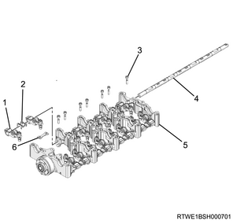
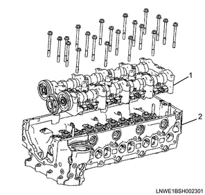
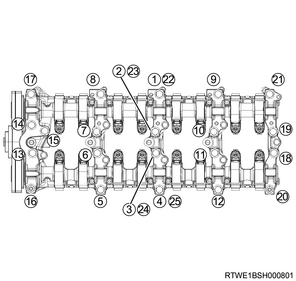
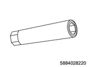
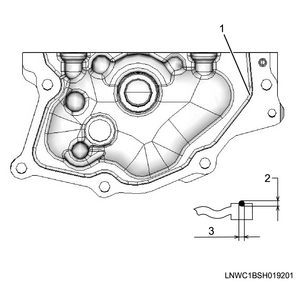
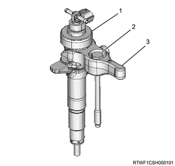
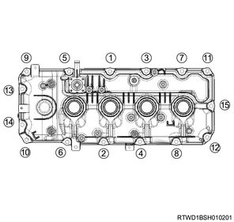

Rocker arm shaft assembly installation (4JJ1)
1. Crankshaft adjustment
1. Align the No.1 cylinder to compression top dead center.
Note
- Turn the crankshaft in the forward direction (clockwise) to align the 1st cylinder piston to compression top dead center.

- Top dead center alignment mark on the gear case cover
- Top dead center alignment mark on the crank pulley
2. Rocker arm shaft assembly installation
1. Put the plate on the camshaft bracket.
2. Install the rocker arm shaft to the camshaft bracket.
Note
- Insert the rocker arm shaft while assembling the rocker arm.
Caution
- Loosen all the adjust screws.
3. Install the spacer to the rocker arm shaft.
4. Apply the engine oil to the bolt.
Note
- Apply to the threaded portion and seating surface of the bolts.
5. Temporarily tighten the rocker arm shaft to the camshaft bracket.
Caution
- Check that the plate is securely installed.
6. Securely tighten the rocker arm shaft to the camshaft bracket.
Note
- Final tighten the rocker arm shaft of the No. 5 journal.
Tightening torque： 9.5 N・m { 1.0 kgf・m / 84 lb・in }
Caution
- Tighten the bolts other than for the No. 5 journal section after assembling the cylinder head.

- Rocker arm
- Spacer
- Bolt
- Rocker arm shaft
- Camshaft bracket
- Plate
7. Apply the engine oil to the camshaft journal.
8. Install the exhaust camshaft to the camshaft bracket.
9. Install the inlet camshaft to the camshaft bracket.
Note
- Align the timing marks with idle gear D and install.
Caution
- Loosen the rocker arm adjust nut in advance and loosen the adjust screw by 2 pitch or more.
- Face the marking on the camshaft upward and install to the camshaft brackets.

- Exhaust camshaft gear
- Inlet camshaft gear
- Idle gear D
3. Camshaft bracket installation
1. Apply the engine oil to the camshaft bearing cap.
Note
- Apply to the sliding surface of the camshaft bearing caps.
2. Install the camshaft bearing cap to the camshaft bracket.
Caution
- Check the marking on the top surface and install.
Note
- Align the marks on the inlet camshaft and exhaust camshaft with the mark on the bearing cap.
Caution
- Confirm that the valve cap is correctly installed to the valve stem end.
- Be careful of valve cap detachment or looseness.

- Alignment mark
3. Apply the engine oil to the bolt.
Note
- Apply to the threaded portion and seating surface of the M6 bolt.
4. Temporarily tighten the camshaft bearing cap to the camshaft bracket.
5. Securely tighten the camshaft bearing cap to the camshaft bracket.
Note
- Tighten the M6 bolts in the order shown in the diagram.

Tightening torque： 7 N・m { 0.7 kgf・m / 62 lb・in } Dry
Tightening torque： 6 N・m { 0.6 kgf・m / 53 lb・in } Wet
6. Align the No.1 cylinder to compression top dead center.
Note
- Turn the crankshaft in the forward direction (clockwise) to align the 1st cylinder piston to compression top dead center.
7. Align the camshaft bracket to the cylinder head.

- Camshaft bracket
- Cylinder head
8. Apply the engine oil to the bolt.
Note
- Apply to the threaded portion and seating surface of the M8 bolt.
9. Temporarily tighten the camshaft bearing cap to the camshaft bracket and the cylinder head.
10. Securely tighten the camshaft bearing cap to the camshaft bracket and the cylinder head.
Note
- Tighten the M8 bolts in the order shown in the diagram.

Tightening torque： 18 N・m { 1.8 kgf・m / 13 lb・ft }
11. Securely tighten the rocker arm shaft to the camshaft bracket.
Tightening torque： 9.5 N・m { 1.0 kgf・m / 84 lb・in }
12. Remove the lock bolt from the camshaft gear.

4. Rocker arm adjustment
1. Align the No.1 cylinder to compression top dead center.
Note
- Turn the crankshaft in the forward direction (clockwise) to align the 1st cylinder piston to compression top dead center.
- Top dead center alignment mark on the gear case cover side
- Top dead center alignment mark on the crank pulley side
2. Loosen the adjust screw using special tool.

- Driver
- Ring spanner
- Adjust nut wrench

SST: 5-8840-2822-0 - valve clearance adjust nut wrench
3. Adjust the valve clearance to a standard value using a feeler gauge.
Note
- Insert a 0.15 mm {0.0059 in} feeler gauge between the rocker arm roller and the cam, and tighten the rocker arm adjust screw.
- When the movement of the feeler gauge becomes stiff, fasten the adjust screw nut of the rocker arm.
Tightening torque： 18 N・m { 1.8 kgf・m / 13 lb・ft }

- Cam: Exhaust side
- Cam: Intake side
- Roller: Intake side
- Roller: Exhaust side
Note
- When the No. 1 cylinder is at the compression top dead center, a circle is marked in the table; when the No. 4 cylinder is at the compression top dead center, an X is marked in the table for adjustment of valve clearance.
| Cylinder No. | 1 | 2 | 3 | 4 | ||||
| Valve arrangement | IN | EX | IN | EX | IN | EX | IN | EX |
| When No. 1 cylinder is at compression top dead center | O | O | O | O | ||||
| When No. 4 cylinder is at compression top dead center | X | X | X | X | ||||
Caution
- Make sure to adjust while cool.
5. Baffle plate installation
1. Install the baffle plate to the cylinder head.
Caution
- Do not interfere with camshaft bracket mounting bolts.
Tightening torque： 10 N・m { 1.0 kgf・m / 89 lb・in }

6. Timing chain installation
1. Install the sprocket to the idle gear D.
Note
- Install together with the timing chain.
Tightening torque： 8 N・m { 0.8 kgf・m / 71 lb・in }
2. Install the sleeve to the sprocket.
Tightening torque： 59 N・m { 6.0 kgf・m / 44 lb・ft }
Note
- Align the 2 timing marks as shown in the diagram.

- Timing chain
- Timing mark
- Blue link
- Yellow link
7. Timing chain lever pivot installation
1. Install the timing chain lever pivot to the timing chain tension lever.
Tightening torque： 27 N・m { 2.8 kgf・m / 20 lb・ft }

8. Timing chain lower cover installation
1. Apply liquid gasket to the timing chain lower cover.
Note
- Apply ThreeBond 1207C or equivalent.
Bead height： 2.0 to 2.5 mm { 0.079 to 0.098 in }
Bead width： 2.0 to 2.5 mm { 0.079 to 0.098 in }
Caution
- Within 5 minutes of applying the liquid gasket, install the cover.

- Liquid gasket
- Bead height
- Bead width
2. Install the timing chain lower cover to the gear case cover.
Tightening torque： 10 N・m { 1.0 kgf・m / 89 lb・in }
9. Noise cover installation
1. Install the noise cover to the timing chain lower cover.
Tightening torque： 10 N・m { 1.0 kgf・m / 89 lb・in }

10. Timing chain upper cover installation
1. Apply liquid gasket to the timing chain upper cover.
Note
- Apply ThreeBond 1217H or equivalent.
Bead height： 1.0 to 1.5 mm { 0.039 to 0.059 in }
Bead width： 2.0 to 2.5 mm { 0.079 to 0.098 in }
Caution
- Within 5 minutes of applying the liquid gasket, install the cover.

- Liquid gasket
- Bead height
- Bead width
Caution
- Wipe off any excess liquid gasket.
2. Install the timing chain upper cover to the cylinder head.
Tightening torque： 25 N・m { 2.5 kgf・m / 18 lb・ft }
11. CMP sensor connect
1. Connect the connector to the CMP sensor.

- CMP sensor
12. Timing chain tensioner installation
1. Connect the hook to the pin.
Note
- Keep the state where the latch is being pushed.
- Insert the plunger.
- Install the hook to the pin, and fasten the plunger.

- Pin
- Plunger
- Latch
- Timing chain tensioner
- Hook
2. Install the timing chain tensioner to the cylinder head.
Tightening torque： 10 N・m { 1.0 kgf・m / 89 lb・in }
Caution
- Do not reuse the gasket.
3. Install the oil pipe to the timing chain tensioner.
Tightening torque： 14.7 N・m { 1.5 kgf・m / 11 lb・ft }

- Oil pipe
- Timing chain tensioner
- Gasket
4. Disconnect the hook from the pin.
Note
- Lightly push the area indicated with an arrow in the diagram.
- The hook of the tensioner opens and the plunger pushes the tension lever to pull the chain.

13. Injector installation
1. Apply the engine oil to the O-ring.
2. Install the O-ring to the injector.
3. Install the injector gasket to the cylinder head.
Note
- Drop the injector gasket into the port on the cylinder head side.
Caution
- Do not reuse the injector gasket.
- Before assembling the injector gasket, clean foreign material or dirt from the cylinder head and the injector.
Note
- Check that the injector gasket is seated horizontally.
- Check whether the injector gasket was inserted by checking the nozzle height.
Caution
- Press the injector in perpendicularly to ensure that the injector gasket is not slanted.
- Do not press in by holding the injector connector.
- When the clamp is tightened, the injector gasket is pushed in until it hits the end of the injector. Therefore, do not push the gasket in the injector by force.
- Do not reuse the leak-off pipe and the clip.

- Injector
- Leak-off pipe
- Clip
- O-ring
- Injector gasket
4. Install the injector clamp to the injector.

- Injector
- Bolt
- Injector clamp
5. Apply the engine oil to the bolt.
Note
- Apply it to the threaded portion and the seat surface.
6. Install the injector to the cylinder head.
7. Temporarily tighten the injector clamp to the cylinder head.
14. Injection pipe installation
1. Apply the engine oil to the injection pipe.
Note
- Apply engine oil to the injector side sleeve nut threaded portion and the O-ring of the injector.
2. Temporarily tighten the injection pipe to the injector and the common rail (fuel rail) assembly.
Note
- Temporarily tighten the sleeve nut by hand until the nut does not turn.

3. Temporarily tighten the clip to the injection pipe.
4. Securely tighten the injector clamp to the cylinder head.
Tightening torque： 26 N・m { 2.7 kgf・m / 19 lb・ft }
5. Securely tighten the injection pipe to the injector and the common rail (fuel rail) assembly.
Tightening torque： 29.5 N・m { 3.0 kgf・m / 22 lb・ft } Injector side
Tightening torque： 29.5 N・m { 3.0 kgf・m / 22 lb・ft } Common rail (fuel rail) side
Caution
- Do not reuse the injection pipe.
6. Securely tighten the clip to the injection pipe.
Tightening torque： 10 N・m { 1.0 kgf・m / 89 lb・in }
15. Cylinder head cover installation
1. Apply liquid gasket to the cylinder head.
Note
- Apply ThreeBond 1217H or 1207C to the mating surface with the cylinder head.
Caution
- Within 5 minutes of applying the liquid gasket, install the cover.
- Remove the dust flange from the oil seal section on the injector connector side.
Bead width： 2.0 to 2.5 mm { 0.079 to 0.098 in }
Bead height： 1.0 to 1.5 mm { 0.039 to 0.059 in }

- Liquid gasket
- Bead width
- Bead height
2. Install the cylinder head cover to the cylinder head.
Caution
- Do not reuse the cylinder head cover gasket.
Note
- Temporarily tighten in the order shown in the diagram.
Tightening torque： 5 N・m { 0.5 kgf・m / 44 lb・in }

Note
- Firmly tighten in the order shown in the diagram.
Tightening torque： 9 N・m { 0.9 kgf・m / 80 lb・in }
3. Connect the harness clip to the cylinder head cover.

16. Blow-by hose connect
1. Connect the blow-by hose to the cylinder head cover.
17. Fuel leak-off hose installation
1. Install the leak-off pipe to the injector.

- Leak-off pipe
- Clip
2. Install the fuel leak-off hose to the leak-off pipe.

- Fuel leak-off hose
- Connector
Caution
- Do not reuse the leak-off pipe and the clip.
18. Injector connect
1. Connect the harness connector to the injector.
19. Vacuum pipe installation
1. Install the vacuum pipe to the cylinder head cover.
Tightening torque： 25 N・m { 2.5 kgf・m / 18 lb・ft }
20. Bracket installation
1. Install the bracket to the cylinder head cover.
Note
- Install as a set with the turbocharger control solenoid.
Tightening torque： 25 N・m { 2.5 kgf・m / 18 lb・ft }

2. Connect the connector to the turbocharger control solenoid.
21. A/C compressor drive belt installation
1. Install the A/C compressor drive belt to the pulley.

- A/C compressor drive belt
22. A/C compressor drive belt adjustment
1. Adjust tension to the specified value using a tension meter.
Note
- When adjusting the amount of flex to the original value
- Apply a load to measurement points 2, 3, and 4 of the A/C compressor drive belt and adjust the amount of flex.
Load： 98 N { 10 kg / 22 lb }
| Measurement point 2 | |
| Amount of flex | |
| For a new product | ： 12.4 to 16.4 mm { 0.488 to 0.646 in } |
| When reused | ： 16.5 to 19.1 mm { 0.650 to 0.752 in } |
| Measurement point 3 | |
| Amount of flex | |
| For a new product | ： 12.5 to 16.5 mm { 0.492 to 0.650 in } |
| When reused | ： 16.5 to 19.1 mm { 0.650 to 0.752 in } |
| Measurement point 4 | |
| Amount of flex | |
| For a new product | ： 15.9 to 20.7 mm { 0.626 to 0.815 in } |
| When reused | ： 20.7 to 23.7 mm { 0.815 to 0.933 in } |
Note
- When adjusting the tension by using a sonic tension meter
- Measure the frequency at measurement points 2, 3, and 4 with a sonic tension meter.
| Measurement point 2 | |
| Frequency | |
| For a new product | ： 92 to 112 Hz |
| When reused | ： 80 to 92 Hz |
| Measurement point 3 | |
| Frequency | |
| For a new product | ： 92 to 112 Hz |
| When reused | ： 79 to 91 Hz |
| Measurement point 4 | |
| Frequency | |
| For a new product | ： 70 to 86 Hz |
| When reused | ： 62 to 70 Hz |

- Measurement point 1
- Measurement point 2
- Measurement point 3
- Measurement point 4
- Adjust bolt (A/C compressor drive belt)
Note
- After adjusting the tension, tighten the tensioner fixing nut.
Tightening torque： 41 N・m { 4.2 kgf・m / 30 lb・ft }
23. Intake air duct installation
1. Install the intake air duct to the intake throttle valve and the intercooler.
Note
- Align the marks on the pipe side and hose side.
Tightening torque： 10 N・m { 1.0 kgf・m / 89 lb・in } Bolt
Tightening torque： 4 N・m { 0.4 kgf・m / 35 lb・in } Clamp (Intake throttle side)
Tightening torque： 5 N・m { 0.5 kgf・m / 44 lb・in } Clamp (Intercooler side)

24. Boost pressure sensor connect
1. Connect the connector to the boost pressure sensor.

25. Intake air duct installation
1. Install the intake air duct to the turbocharger and the intercooler.
Caution
- Referring to the diagram, face the threaded portion of the clamp toward the engine front.
Tightening torque： 25 N・m { 2.5 kgf・m / 18 lb・ft } Nut, bolt
Tightening torque： 4 N・m { 0.4 kgf・m / 35 lb・in } Clamp (Turbocharger side)
Tightening torque： 5 N・m { 0.5 kgf・m / 44 lb・in } Clamp (Intercooler side)

26. Engine cover installation
1. Install the engine cover to the engine.

- Engine cover
27. Battery ground cable connect
1. Connect the battery ground cable to the battery.
2. Close the engine hood assembly.